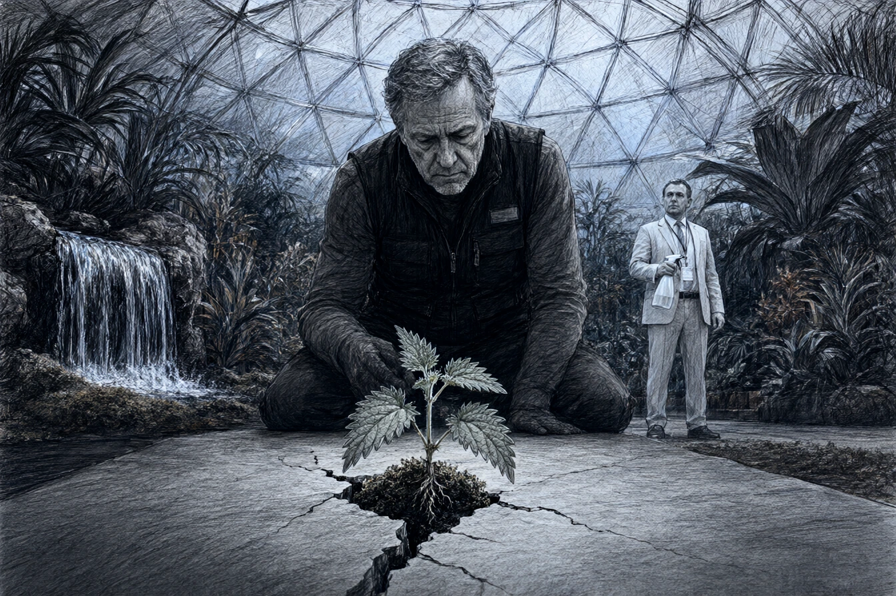

Sous la coupole géodésique de cinquante mètres de diamètre érigée au centre du parc de l'Orangerie à Strasbourg, la température ne variait jamais d'un dixième de degré. Le pavillon s'appelait le Biosphère-Jardin. Conçu et financé par la branche d'ingénierie environnementale d'OmniCorp, l'ouvrage abritait trois mille répliques végétales en polymère réticulé, arrosées d'un brouillard d'huiles essentielles par des micro-buses dissimulées dans les faux troncs de séquoia.
Antoine Dubois, cinquante-huit ans, ancien conservateur des serres universitaires du jardin botanique, portait le gilet de service noir des agents de médiation. Il tenait un chiffon microfibre et un sécateur sans tranchant, servant uniquement à redresser les tiges de silicone tordues par les visiteurs.
La directrice du site, Madame Valérie Kuntz, arpentait l'allée centrale en caressant d'un doigt ganté les pétales d'une pivoine écarlate.
« Le taux de satisfaction des groupes scolaires atteint quatre-vingt-dix-huit pour cent, Dubois. Pas une abeille pour piquer les enfants, pas de boue sur les semelles, et une floraison perpétuelle douze mois sur douze. C'est la nature expurgée de ses désagréments. « C'est du plastique injecté à chaud sous vide, madame Kuntz, répondit le vieux botaniste sans lever les yeux de son chiffon. Les pivoines sentent le camphre et le solvant de dégraissage. » « Elles sentent ce que le public attend d'une fleur : le propre, l'ordre et l'éternité. » »
Madame Kuntz désigna un massif surélevé au pied de la cascade artificielle dont l'eau recyclée était traitée aux sels d'argent.
« Nettoyez la bordure ouest avant l'arrivée du vice-président d'OmniCorp Europe. Un capteur d'hygrométrie signale une interférence sous les dalles. »
* * *
À dix-huit heures, après la fermeture des tourniquets automatiques, Antoine s'agenouilla devant la bordure ouest, à l'endroit exact où le joint d'étanchéité en néoprène rencontrait le socle de béton.
Une fissure de deux millimètres lézardait la dalle synthétique.
Au milieu de la brèche, enfonçant la couche de mousse artificielle, une pousse d'ortie haute de trois centimètres dressait ses deux premières feuilles dentelées. Une racine grise, rugueuse, couverte d'une motte de terre noire et grasse, remontait des profondeurs du remblai du vieux parc strasbourgeois.
Antoine s'immobilisa. Ses doigts tremblaient légèrement en effleurant les poils urticants.
Madame Kuntz apparut à l'entrée de la travée, un flacon pulvérisateur à la main.
« Qu'est-ce que vous regardez par terre, Dubois ? « Une ortie dioïque, madame. Une graine sauvage dormait sous la chape avant le coulage des fondations. Elle a percé le polymère. » « Arrachez-moi cette saleté immédiatement, » ordonna la directrice en fronçant le nez. »
Elle tendit le flacon de désherbant total à haute rémanence.
« Si les inspecteurs de la sécurité sanitaire voient un organisme biologique incontrôlé sous le dôme, nous perdons notre label de milieu stérile d'expérimentation. Donnez un coup de spray et rebouchez la fente à la résine grise. »
Antoine prit le flacon, le regarda un instant, puis le reposa sur le rebord de la fausse rocaille.
« Non. « Comment cela, non ? » « Elle a mis trois ans à traverser cinquante centimètres de mâchefer et de plastique pour trouver la lumière. Elle a plus de droit sur ce sol que vos trois tonnes de pétrole colorié. » »
Madame Kuntz pâlit de stupeur.
« Vous êtes renvoyé, Dubois. Laissez votre badge et vos clés au poste de contrôle. »
* * *
Antoine traversa le sas de décompression sans un mot, déposa son laissez-passer sur le comptoir des vigiles et franchit la grille extérieure du parc de l'Orangerie.
Dehors, le vrai parc s'étendait sous le crépuscule de novembre. Une pluie froide lavait les pelouses jaunies. Les feuilles mortes des marronniers centenaires pourrissaient lentement dans la boue des allées, dégageant cette odeur puissante d'humus, de décomposition et de pluie qui n'avait besoin d'aucun diffuseur d'arômes.
Dans la poche de son caban, les doigts d'Antoine touchèrent une boîte d'allumettes en carton. À l'intérieur, il avait glissé les trois premières graines mûres de l'ortie sauvage avant de refermer la porte du dôme.
Il s'arrêta sous la colonnade du pavillon Joséphine, là où la grille municipale laissait passer les herbes folles du canal de l'Ill. Il ouvrit la boîte, laissa tomber les graines au pied d'un vieux hêtre dont l'écorce était crevassée par le gel, et tassa la terre meuble d'un coup de talon.
Le dôme d'OmniCorp luisait dans son dos comme une cloche à fromage fluorescente au milieu des arbres nus.
Antoine releva le col de sa veste et marcha vers la ville sans se presser, les mains au chaud dans ses poches, sous la pluie battante qui mouillait son front.